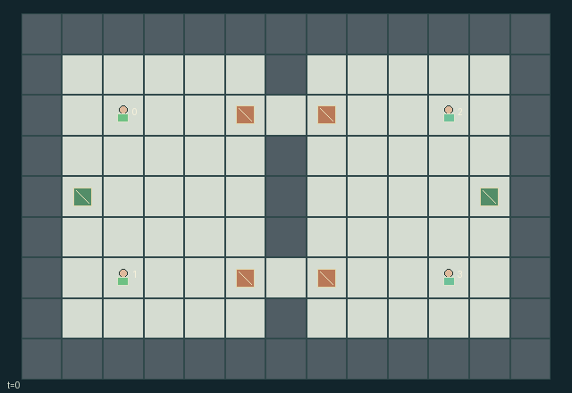

GI120 · Territorial patrol and mobile decoys

Original recording scope: 角色视角 · Mode: 固定脚本演示
Additional generated state replay (different trajectory / full-state debug)

Two teams contest four physical objectives and transport them to their own homes. Team rewards oppose each other for deliveries and actual captures; teammates share their team payoff.
Identity and original contract
4 independently actionable roles; 14 discrete commands per role; 239 native observation columns per role; original horizon 96 steps. Declared per-step reward range: -3.0 to 3.0. Observation regime: partially_observable.
Source SHA-256: caca2a24be3b3391f4a341640bc129934ec74e897cdcf06f544db7f384aa2fdf
The objective, rewards, population, map and horizon remain original. A preview is not a success claim.
Objective and gameplay
Two teams contest four physical objectives and transport them to their own homes. Team rewards oppose each other for deliveries and actual captures; teammates share their team payoff.
Bodies block contested passages; a guard tags adjacent opponents and forces them to drop cargo. A hostile mobile decoy within distance two consumes the guard action and is destroyed, allowing an otherwise capturable opponent to escape. Decoys also reduce nearby opposing sight radius from three to one unless a scout pulse restores five. Physical cargo handoffs, local patrol information, public scores and private decoy telemetry create team coordination choices.
- Teams west and east contest four objectives in two passages through the central wall.
- Move, collect, bank, hand off, guard or scout using simultaneous action intents.
- A guard captures all adjacent awake opponents outside refuges, unless a hostile decoy within two cells distracts it.
- Capture drops cargo at the encounter cell, returns the patrol to its refuge berth and forces two hold transitions.
- A distracted guard destroys its nearest hostile decoy and captures nobody that tick.
- Each patrol has one mobile decoy slot, two charges and a three-tick launch cooldown. A launch can replace an existing own decoy.
- Decoys move one cell per tick, reverse heading and hold when a wall blocks them, and expire after six active ticks.
- Nearby hostile decoys reduce sight radius from three to one. A scout pulse gives radius five and signals its position.
- Teammates receive friendly scout positions globally. Other agent state remains local, and owners alone get remote decoy telemetry.
- Each banked objective gives the team +1 and opponents -1; each enemy capture gives +0.1 and an own capture -0.1.
Ending: All four objectives have been banked, possibly by either team. Otherwise time ends at 96 transitions. Recovery from capture is temporary, not an individual episode end.
What this game explores
Information, sensing & communication: Who knows a fact, when it was measured, and whether it was communicated are separate state variables. Test memory or communication using only the same role-visible evidence.
Joint transport & shared access: Positions, load geometry, occupancy and persistent access constrain whose action can succeed next. Distinguish physical handoff, shared controls and simultaneous force from a cosmetic cooperation label.
Team opposition & interception: Cooperation within a team can coexist with opposition between teams. Preserve team membership, capture and possession rules, and report each team's outcomes instead of assuming a single shared return.
These are questions supported by rule structure, not observed learning effects.
Play it: operating walkthrough
crucibles play --game gi120Keep Python running and open its printed address. Select this game, set a seed and press Create session. The game itself is always English.
Assign a role range to Host with Assign / take over, or Assign all roles. Invite a second participant with Create player invitation, then assign a disjoint subset. Every original role is available.
For every owned role choose a legal command and press Queue. Arrow keys / WASD queue a declared directional action for the current role camera when available. Space or Advance one joint step advances everyone together. Non-directional games use the selectors.
Unqueued roles use the labelled untrained uniform-legal policy. Take over or release roles before the next step without resetting. Full-state debug is privileged and permanently logged; role cameras preserve permissions. Close the session to retain logs. Server restart does not restore sessions.
Complete command reference
IDs and English labels exactly match the manifest. Availability depends on role, resources, location and phase. An available action can still have no productive effect.
0·Hold; recharge one decoy charge near own home while awake
1·Move east
2·Move west
3·Move south
4·Move north
5·Collect an adjacent ground objective when empty, or bank carried objective near own home
6·Hand carried objective to adjacent empty teammate
7·Guard this tick; capture adjacent awake enemies unless distracted by a hostile decoy
8·Scout pulse this tick; observation radius five and position signal
9·Deploy or replace own mobile decoy heading east
10·Deploy or replace own mobile decoy heading west
11·Deploy or replace own mobile decoy heading south
12·Deploy or replace own mobile decoy heading north
13·Drop carried objective at current cell
Roles and capability identifiers
These original role names describe capabilities, not interchangeable skins. Check each owned role's legal selector before planning handoffs.
agent_0·Team west upper patrol, cargo carrier or scout
agent_1·Team west lower patrol, cargo carrier or guard
agent_2·Team east upper patrol, cargo carrier or scout
agent_3·Team east lower patrol, cargo carrier or guard
Information and observation permissions
Terrain, home locations, score totals and clock are public. Patrol/objective/decoy state is visible within Manhattan radius three, or one when a hostile active decoy is within distance two; a scout pulse raises it to five. Self is always visible. The owner additionally sees its active decoy remotely. Friendly scout signals broadcast only sender position/team globally; hostile signals are visible within distance five. A signal does not reveal the sender inventory or other hidden attributes. Every invisible record has an explicit visibility bit and zero data fields.
The GIF is full-state debug and may reveal hidden entities or private state. Train on obs[agent], not the picture, state tree or another role's private row. Field slices and visibility are in the original manifest.
Reinforcement-learning integration
import jax
from crucibles_jaxmarl import make
env = make("gi120")
key = jax.random.PRNGKey(0)
key, rk, ak, sk = jax.random.split(key, 4)
obs, state = jax.jit(env.reset)(rk)
actions = env.sample_actions(ak, state)
obs, state, rewards, dones, info = jax.jit(env.step_env)(sk, state, actions)
done = dones["__all__"]Observations are float32 vectors of width 239; actions are scalar int32; masks have 14 entries. Supply all 4 roles each transition. Masked sampling is an engineering reference, not a trained learner.
step_env retains terminal data without reset. step performs outer autoreset and keeps terminal data in info["raw_state"] and info["raw_observation"]. Use dones["__all__"] for episode boundaries; separate completion, failure and time limit in analysis.
JIT or vmap equal identities and shapes. Split independent reset, policy and transition keys. Group different shapes explicitly; do not shrink the population or horizon. Host rendering stays outside training.
Training questions and fair evaluation
Define valid completion from the objective before fitting. Preserve original rewards and also report real deliveries/services, losses, resource state, unresolved episodes and per-role returns. Animation is not a reward signal.
Who knows a fact, when it was measured, and whether it was communicated are separate state variables. Test memory or communication using only the same role-visible evidence.
Positions, load geometry, occupancy and persistent access constrain whose action can succeed next. Distinguish physical handoff, shared controls and simultaneous force from a cosmetic cooperation label.
Cooperation within a team can coexist with opposition between teams. Preserve team membership, capture and possession rules, and report each team's outcomes instead of assuming a single shared return.
Compare memory, communication or centralized critics under matched actor information. Declare critic access; keep actor inputs role-filtered. Match partner/opponent distributions, masks, compute and checkpoint selection. Final tests never enter fitting or selection.
Independent training runs or source-pairing blocks are inferential units; episodes from one policy are not independent training replications. Save hashes, keys, versions, device, time and cost. Negative, zero, failed and indeterminate outcomes are valid. No trained checkpoint or target score is supplied.
Classification and evidence
Overlapping editorial labels are reading aids, not proof of novelty, difficulty, strategic equivalence or learning effects.
- Information, sensing & communication
- Evidence
manifest.task.interaction: Bodies block contested passages; a guard tags adjacent opponents and forces them to drop cargo. A hostile mobile decoy within distance two consumes the guard action and is destroyed, allowing an otherwise capturable opponent to escape. Decoys also reduce nearby opposing sight radius from three to one unless a scout pulse restores five. Physical cargo handoffs, local patrol information, public scores and private decoy telemetry create team coordination choices.
- Evidence
manifest.task.observation_access: Terrain, home locations, score totals and clock are public. Patrol/objective/decoy state is visible within Manhattan radius three, or one when a hostile active decoy is within distance two; a scout pulse raises it to five. Self is always visible. The owner additionally sees its active decoy remotely. Friendly scout signals broadcast only sender position/team globally; hostile signals are visible within distance five. A signal does not reveal the sender inventory or other hidden attributes. Every invisible record has an explicit visibility bit and zero data fields.
- Evidence
manifest.actions.8: Scout pulse this tick; observation radius five and position signal
- Joint transport & shared access
- Evidence
manifest.task.objective: Two teams contest four physical objectives and transport them to their own homes. Team rewards oppose each other for deliveries and actual captures; teammates share their team payoff.
- Evidence
manifest.task.interaction: Bodies block contested passages; a guard tags adjacent opponents and forces them to drop cargo. A hostile mobile decoy within distance two consumes the guard action and is destroyed, allowing an otherwise capturable opponent to escape. Decoys also reduce nearby opposing sight radius from three to one unless a scout pulse restores five. Physical cargo handoffs, local patrol information, public scores and private decoy telemetry create team coordination choices.
- Evidence
manifest.actions.5: Collect an adjacent ground objective when empty, or bank carried objective near own home
- Team opposition & interception
- Evidence
manifest.task.objective: Two teams contest four physical objectives and transport them to their own homes. Team rewards oppose each other for deliveries and actual captures; teammates share their team payoff.
- Evidence
manifest.task.interaction: Bodies block contested passages; a guard tags adjacent opponents and forces them to drop cargo. A hostile mobile decoy within distance two consumes the guard action and is destroyed, allowing an otherwise capturable opponent to escape. Decoys also reduce nearby opposing sight radius from three to one unless a scout pulse restores five. Physical cargo handoffs, local patrol information, public scores and private decoy telemetry create team coordination choices.
- Evidence
manifest.actions.7: Guard this tick; capture adjacent awake enemies unless distracted by a hostile decoy
Source, receipts and preview limits
The additional generated state GIF replays saved untrained legal actions through the original kernel. At most 25 actual endpoints include initial and terminal state; no invented interpolation. It is full-state debug, not the role observation. Where an original scene preview exists, it is displayed first with its own recorded information scope. The two recordings may use different trajectories and views.
Original source, observation slices, manifest and mechanism
Native receipt · Presentation receipt
Engineering passes do not establish learning. Nonzero floating differences remain recorded and undetermined; no new tolerance was introduced. Human scores remain unverified.